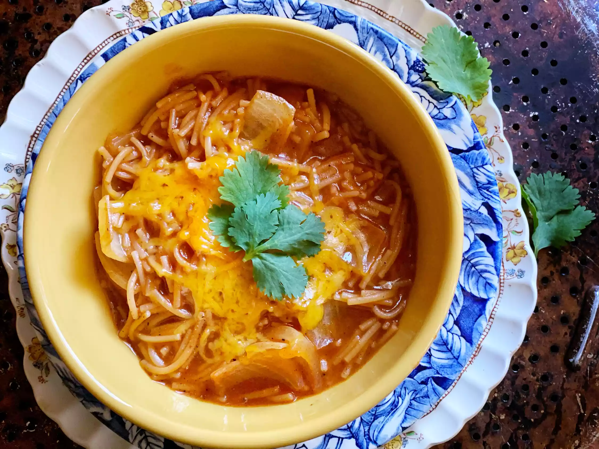

Description
This fideo recipe was given to me by my mother-in-law. It goes great with
any meat dish, including carne asada. I use this recipe in place of rice as my side dish.
Ingredients
- 2 tablespoons vegetable oil
- 1 (8 ounce) package fideo pasta
- 1 ½ cups water, divided
- 1 (8 ounce) can tomato sauce, divided
- 1 tablespoon chili powder
- ½ teaspoon ground cumin
- ½ teaspoon garlic salt
Directions
-
Heat oil in a saucepan over medium-high heat. Add fideo; cook and stir until browned.
-
Add 1 cup water and 1/2 of the tomato sauce to fideo. Season with chili powder,
cumin, and garlic salt; stir to blend. Bring to a boil and cook until liquid has
almost evaporated.
-
Stir in remaining 1/2 cup water and remaining tomato sauce. Cover and cook
over medium heat until fideo is tender and sauce thickens, about 10 minutes.
Back to top
Back to homepage